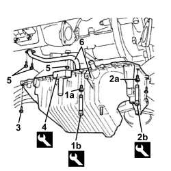

1020A26 CRANKCASE SUMP - R.R CLEAN MATING SURFACES AND APPLY SEALANT FOR VEHICLES WITH AIR CONDITIONING
- Path
- Procedures > 10 ENGINE > 1020 CRANKCASE SUMP AND COVERS > 1020A CRANKCASE OIL SUMP > 1020A26 CRANKCASE SUMP - R.R CLEAN MATING SURFACES AND APPLY SEALANT FOR VEHICLES WITH AIR CONDITIONING
- Kind
- repair procedure (removal / refitting; the operation number is the code)
- Applies to
- engines: 2.4 JTD 20V; all production periods
- Interactive page
- https://sloeber94.github.io/elrnDB/alfa/159/en/#/939005250
Applies to: engines: 2.4 JTD 20V; all production periods
 Removing
Removing
 Refitting
RefittingOp. 4450B12 FRONT WHEELS (TWO) - R+R
Op. 7055B54 UNDER ENGINE PROTECTION/GUARD - R.R.
Op. 1076B72 INTERMEDIATE EXHAUST PIPE WITH HOSE SECTION - R+R
Op. 4410D10 FRONT SUSPENSION FRAME - R+R
Op. 1084A16 OIL DIPSTICK PIPE - R.R
Op. 0010T12 ENGINE OIL AND FILTER - REPLACE
1. Undo the front and rear bolts (1b) fixing the crankcase sump using the spanner (1b).
Tool | Description | Function | Validity |
|---|---|---|---|
1860834000 | Spanner | Loosen/ tighten front and rear crankcase sump bolts | 2.4 JTD 20V |
2. Undo the gearbox side bolts (2a) fixing the crankcase sump using the spanner (2b).
Tool | Description | Function | Validity |
|---|---|---|---|
1860833000 | Spanner | Loosen/ tighten the bolts securing the crankcase sump, timing side and gearbox side | 1.9 JTD 8V 2.4 JTD 20V |
3. Use an adjustable spanner wrench to unscrew the timing end side bolts.
4. Cut the sealant using the special tool and lower the oil sump as far as possible.
Tool | Description | Function | Validity |
|---|---|---|---|
1870718000 | Blade | Cut the crankcase sump sealant |
5. Undo the bolts and the nut fixing the engine oil intake.
6. Remove the crankcase sump together with the engine oil intake.

Applies to: engines: 2.4 JTD 20V; all production periods
Refitting
Removing- Clean the matching surfaces between the crankcase sump and the cylinder block/crankcase.
- Apply silicone sealant to the oil sump side and rear surfaces.
- Position the crankcase sump in its housing together with the intake with no axial deviation.
- Tighten the bolts and the nut fixing the engine oil intake.
- Apply silicone sealant to the oil sump front surface.
- Tighten the side bolts securing the crankcase sump to the recommended torque using the wrench (to be used for the gearbox side bolts only).
Component | Fastening | dia | Value (daNm) | Validity |
|---|---|---|---|---|
Engine oil sump | Side bolts | M6 | 0.9 | 2.4 JTD 20V |
Tool | Description | Function | Validity |
|---|---|---|---|
1860833000 | Spanner | Loosen/ tighten the bolts securing the crankcase sump, timing side and gearbox side | 1.9 JTD 8V 2.4 JTD 20V |
- Tighten the front and rear bolts fixing the crankcase sump to the recommended torque using the wrench.
Component | Fastening | dia | Value (daNm) | Validity |
|---|---|---|---|---|
Engine oil sump | Front and rear bolts | M8 | 2.5 | 2.4 JTD 20V |
Tool | Description | Function | Validity |
|---|---|---|---|
1860834000 | Spanner | Loosen/ tighten front and rear crankcase sump bolts | 2.4 JTD 20V |
Op. 1084A16 OIL DIPSTICK PIPE - R.R
Op. 4410D10 FRONT SUSPENSION FRAME - R+R
Op. 1076B72 INTERMEDIATE EXHAUST PIPE WITH HOSE SECTION - R+R
Op. 7055B54 UNDER ENGINE PROTECTION/GUARD - R.R.
Topics linked from this page (6)
- 0010T12 ENGINE OIL AND FILTER - REPLACE
- 1076B72 INTERMEDIATE EXHAUST PIPE WITH HOSE SECTION - R+R
- 1084A16 OIL DIPSTICK PIPE - R.R
- 4410D10 FRONT SUSPENSION FRAME - R+R
- 4450B12 FRONT WHEELS (TWO) - R+R
- 7055B54 UNDER ENGINE PROTECTION/GUARD - R.R.